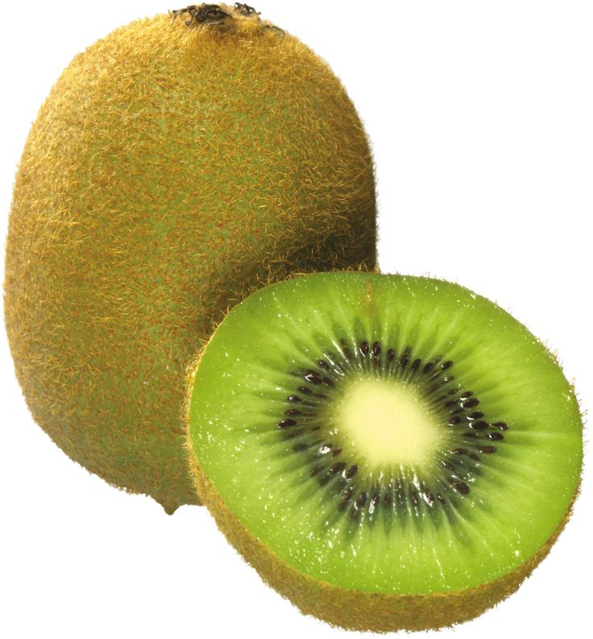

Freshness You Can Trust

Kiwi is a small, green-fleshed fruit that is packed with nutrients and has a sweet-tart taste. It is rich in vitamin C, vitamin K, vitamin E, dietary fiber, potassium, and antioxidants. Kiwi helps boost the immune system, improves digestion, supports heart health, promotes healthy skin, and protects the body from harmful free radicals. It also helps keep the body hydrated and provides natural energy. Kiwi can be enjoyed fresh, in fruit salads, smoothies, desserts, or juices.